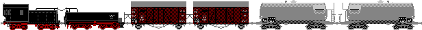
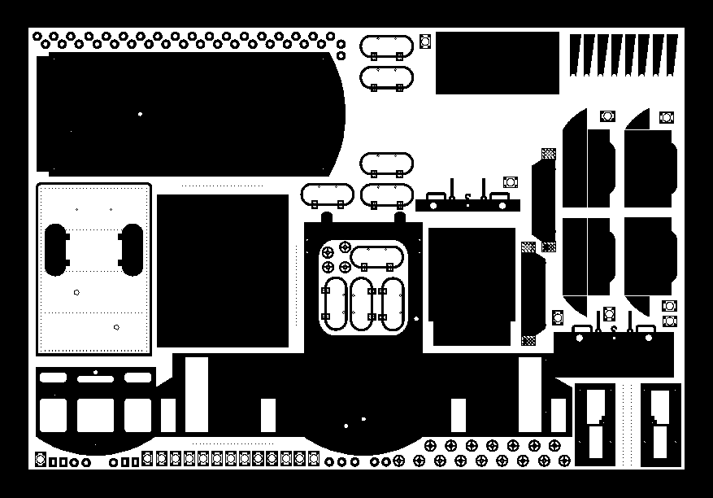
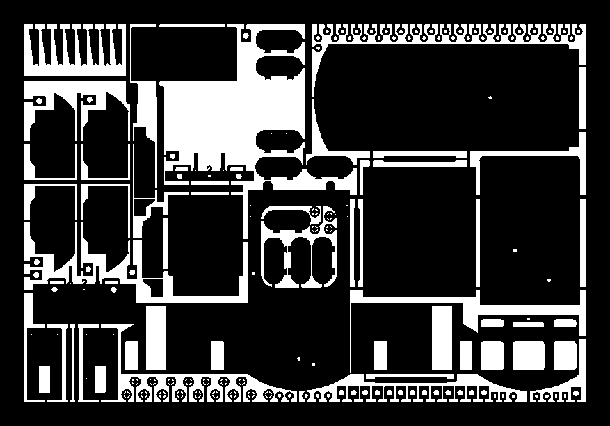
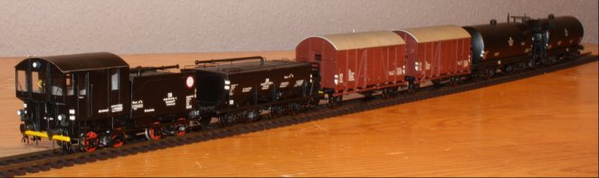

Unkrautvertilgungszug
- Allgemeine Informationen
- Technische Daten
- Literaturhinweise
- Industriemodelle/Bausätze
- Bauteilliste
- Baubeschreibung
Allgemeine Informationen
Aus: Miba-Report Dienstfahrzeuge 1, Dienstfahrzeuge 2
Zur Unkrautbeseitigung setzte die DRG erstmals 1925 Sprengzüge aus dreiachsigen Tendern ein. Seit 1940 haben die Sprengwagen eine geschlossene Bedienungskabine. Acht bis zwölf Tender führten mindestens 120m³ Wasser mit, um eine 3%ige Lösung (30kg auf 1m³) aus Natriumchlorat auf die Gleise zu bringen. Für Zugleiter und Bedienmannschaft wird ein Wohnwagen und für Chemikalien ein Güterwagen mitgeführt. Mit den Vorräten ließen sich ca. 20 bis 50km Gleis besprengen.
...
Die DB beschaffte ab 1960 moderne Unkrautsprengzüge. Kasten- und Wannentender wurden in Sprengwagen umgebaut, weitere Wannentender dienten als Mischwagen für die Spritzbrühe, Güterwagen Oppeln als Chemikalenvorratswagen und Wannentender oder vierachsige Kesselwagen als Wasserwagen. Bis 1979/80 erfolgte die Ausmusterung der Sprengzüge bei der DB.
...
Ab 1965 erfolgte eine Rekonstruktion von normalspurigen Sprengzügen. Als Sprengwagen wurden dreiachsige Tenderfahrgestelle mit einem modernen Aufbau versehen. Vierachsige Tenderaufbauten wurden in Fahrtrichtung halbiert, auf zweiachsige Güterwagenfahrgestelle aufgesetzt und die Chemikalien in Fässern mitgeführt.
...
(Wasserwagen)
Die beidseitigen Einlauföffnungen waren in der Höhe über Schienenoberkante so bemessen, dass die Wagen unter ortsüblichen Wasserkränen innerhalb kürzester Zeit aufgefüllt werden konnten. In der Regel waren die Behälter für einen eventuell späteren Wärmeschutzmantel vorbereitet. Dies unterblieb aber, wie an den Abstandshaltern des Laufsteges zu erkennen ist.
Ein solcher Behälter fasste zwar maximal 24m³, die Tragfähigkeit des Wagens mit 21 bis 22t sowie die Anordnung der Luken erlaubten aber höchsten 22m³. Das Eigengewicht lag mit 9,6t im gleichen Wert wie das der Treibstoffwagen. Auch gab es diesen Wagen ohne Luken und Heizung sowie mit Wärmeschutz und Heizung, beide fanden später häufig als Mineralöl- bzw. Betriebsstoffwagen Verwendung
Auch aus dem 48m³-Typ wurden Wasserwagen abgeleitet. Die ersten fertigte Westwaggon im Jahre 1942. Sie hatten einen Wärmeschutz, durchgehende Heizleitung und Bodenventile. Im gekuppelten Verband war eine seitlich verlegte Rohrleitung (Ø etwa 150mm) an der rechten Wagenseite vorhanden, die Verbindung untereinander bestand aus flexiblen Schläuchen gleichen Durchmessers.
Aus: Eisenbahn-Magazin 4/04
Sprengzüge für die Unkrautbekämpfung liefen als Dienstsonderzüge (Dsts mit Zugnummer) mit der Höchstgeschwindigkeit von 40km/h. Nur in Ausnahmefällen wurden 45km/h erlaubt; als Leerfahrt waren 65km/h zulässig. War das durchgehende Hauptgleis eines Bahnhofs unkrautfrei, sollte im Rahmen der Streckenspritzung der Spritzug über ein stärker verkrautetes Gleis fahren, wenn Ein- und Ausfahrt durch diese Gleis signalmäßig möglich waren. Wurde der Zug nachts auf einem Bahnhof abgestellt, sollte das möglichst auf einem Stumpfgleis mit gefahrlosem Zugang in der Nähe des Empfangsgebäudes geschehen.
Aus: Messerschmidt, Wolfgang : Dampflokomotiven und ihre Tender (Seite 141f.),
Franckh'sche Verlagshandlung Stuttgart 1987, ISBN 3-440-05778-X
Mit Herbiziden vollgetankte Kesselwagen absolvieren beispielsweise in einem Spritzzug bei 40km/h Fahrgeschwindigkeit ihre Einsatzzweck, wobei die Düsen mit etwa 1,3kg/cm2 Druck ihre Flüssigkeit versprühen. Hierbei sorgt eine besonderer Technik für die Steuerung der Streubreiteneinstellung.
Bei der Deutschen Bundesbahn, so hört man, werden übrigens nur die von der Biologischen Bundesanstalt Braunschweig zugelassenen Spritzmittel zur Bekämpfung des Wildwuchses und der betriebsgefährdenden Humusbildung in der Gleisbettung verwendet.
Wie zu Zeiten der DRG Unkrautbekämpfung durch geführt wurde, kann in den
aus dem Jahre 1934 nachgelesen werden.
Mein Selbstbau beruht auf dem Spieth-Beschriftungssatz Bz12, dem eine rudimentäre (Um-)Bauanleitung beiliegt.
Hilfreich (und nahezu unverzichtbar) für den Umbau sind Fotos im Internet: sowohl auf den Linkseiten (s.u.) als auch gezielt durch eine Suche (Stichwort: "Unkrautspritzzug", "Unkrautsprengzug", "Unkrautvertilgungszug", "Unkrautbekämpfungszug", "Vegetationskontrollzug" o.ä.).
Technische Daten
Literaturhinweise
- Messerschmidt, Wolfgang : Dampflokomotiven und ihre Tender (Seite 141f.)
- Miba 4/71 (Seite 272f.): Sprengzugwagen zur Unkrautvertilgung
- Miba-Report Dienstfahrzeuge 1 (Seite 74ff.): Unkrautspreng- und Schleifzüge
- Miba-Report Dienstfahrzeuge 2 (Seite 42ff.): Wasserwagen
- Eisenbahn-Magazin 4/04 S76..79: Wider den Wildwuchs: Unkrautbekämpfungszüge in Vorbild und Modell
- Eisenbahn-Magazin 6/08 S74..77: Spritziger Feldzug: Unkrautvertilgungs- bzw. bekämpfungs-Wagen für H0 und H0e
- Miba 2/09 (Seite 62ff.): Gleispflege im Doppelpack: Ein vorbildgerechter Unkrautspritzzug im Modell
- Bahndienst- und Dienstgüterwagen, Band 1: Spezialwagen für jeden Zweck S.216ff: Sprengzüge
| Links |
|
|---|
Industriemodelle/Bausätze
| Hersteller | Epoche | H0 | TT | N | Bemerkungen |
|---|---|---|---|---|---|
| Liliput | III | L236000 (F) | Sprühwagen, Mischwagen, Vorratswagen, Wasserwagen | ||
| L236490 (F) | Wasserwagen |
Bauteilliste
Basisfahrzeuge für einen Selbstbau:- Sprengwagen: P8-Kastentender 2'2'T21.5 (Liliput 30815; Märklin 227040)
- Mischwagen: Wannentender (Liliput 230991; Märklin 22407)
- Präparatewagen: gedeckter Güterwagen "Oppeln" (Liliput 225303; Roco 47521 bzw. 47527)
- Wasserwagen: 4achsiger Kesselwagen (Piko 54381)
| Stückzahl | Benennung | Best.Nr. | Techn.Daten | Hinweis |
|---|---|---|---|---|
| 1 | Gehäuse-Ätzplatte Oberseite Unterseite |
251*145*0,3mm | Die Ätzplatte enthält alle TeileTeile, die für den Umbau - eines Kastentenders - eines Wannentenders - 2 Kesselwagen und - 2 gedeckten Güterwagen benötigt werden. Weiterhin sind diverse Teile als Reserve enthalten. |
|
| 1 | BeschriftungssatzBeschriftungssatz | Bz12 |
Die Fa. Spieth existiert nicht mehr. Beschriftungen können von Andreas Nothaft gefertigt werden. |
|
| 1 | Halterung für vordere KupplungHalterung für vordere Kupplung | |||
| DB-Einheitslaternen für Dampflokomotiven |
Weinert 9002 | am Sprengwagen | ||
| 4 | Puffer | Weinert 8600 | (4er Pack) | Ø 5,2mm, am Sprengwagen |
| 4 je Wagen | Puffer | Weinert 8615 | (20er Pack) | Ø 4,3mm, an allen anderen Wagen |
| 2 je Wagen | Hakenkupplung | Weinert 8648 | (2er Pack) | nicht bei Anbau einer Fahrzeugkupplung |
| 2 je Wagen | Bremsschläuche, glatt | Weinert 8290 | (4er Pack) | nicht bei Anbau einer Fahrzeugkupplung |
| 1 | Signalhorn | Weinert 4376 | (4er Pack) | am Sprengwagen |
| 1 | Dachlüfter | Weinert 8956 | (2er Pack) | am Sprengwagen |
| 2 | Scheibenwischer | Weinert 9230 | (20er Pack) | am Sprengwagen |
| 3 | Signalscheibenhalter | Weinert 8261 | (20er Pack) | am Sprengwagen |
| 2 | Aufstiegsleiter | Weinert 8732 | am Sprengwagen | |
| 1 | Riffelblech | Weinert 9336 | für die Übergangsbleche | |
| 1 | Feuerwehrset Aufbau LF 10/6 | Herpa 081535 | die Leitern werden für die Kesselwagen benötigt | |
| 4 | Fensterrahmen | für die Übergangstüren an den Präparatewagen | ||
| Messingprofil | Rund: 0,4mm, 0,5mm, 0,6mm, 1mm und 2mm | |||
| Messingprofil | Rohr: Ø 1,5mm | Längsleitung an den Fahrzeugseiten | ||
| Messingprofil | U-Profil: 2*1mm, 3*1,5mm | |||
| Messingprofil | L-Profil: 1*1mm | |||
| Messingprofil | I-Profil: 2*2mm, 2*1mm | |||
| Messingprofil | Rechteck-Profil: 2*1mm |
;){kind=link}
;){kind=link}
;){kind=link}
;){kind=link}
;){kind=link}
| Farbe | RAL | Weinert Best.Nr. |
|---|---|---|
| Grundierung | 2698 | |
| Klarlack | 2697 | |
| Goldgelb | 1004 | 2604 |
| Rotbraun | 8012 | 2643 |
| Tiefschwarz | 9005 | 2646 |
| Weißaluminium | 9006 | 2647 |


Gehäuse-Ätzplatte

Benennung der Teile auf der Gehäuse-Ätzplatte

Abbildung des Spieth-Beschriftungssatzes Bz12
Baubeschreibung

in Betrieb seit: 01.2013
Sprengwagen (1)
siehe auch: Umbau eines KastentendersDer Umbau beschreibt die Verwendung des Märklin-Tenders. Wird ein anderer Tender verwendet, können angegebene Maße abweichen, hier ist dann Nachmessen angesagt. Auch wird dann nicht garantiert, dass die Tenderabdenkung aus der Gehäuse-Ätzplatte exakt passt!
Der Tender wird zunächst in seine Einzelteile zerlegt. Da der Drehgestellabstand auf 47mm vergrößert wird, ist das 'Steifrahmenfahrwerk' nicht weiter verwendbar, es werden zwei neue Drehgestelle benötigt:
- Märklin Drehgestelle 219714 oder
- Liliput 40278 oder
- es ist Selbstbau angesagt: da die an der Bodenplatte angebrachten Drehgestellblenden auf jeden Fall entfernt werden müssen, geschieht dies so, das sie für ein Selbstbaudrehgestell wieder verwendet werden können. Meine beiden Drehgestelle sind aus einem Kunststoffblock gefräst, der die beiden Achsen aufnimmt und an den seitlichen Zapfen die beiden Drehgestellblenden trägt.
Bei Verwendung des Originalen Märklinmaterials müssen für den Einsatz auf dem Gleichstrom/DCC-System die Achsen einseitig isoliert und die Spurkränze bei Bedarf abgedreht werden.

Vor dem Biegen der Kabine werden zunächst die beiden Türen von hinten angelötet, an jede Seite links und rechts vom hinteren Fenster ein Nietenstreifen angelötet, anschließend die Aufenthaltskabine zurecht gebogen und zusammengelötet. Das Dach der Kabine wird über einem Rundholz so gebogen, dass es an die Rundung der Kabine passt.
Neben den Türen werden aus Messingdraht passend gebogene Handläufe angelötet, unterhalb der Kabinentüren werden die Aufstiegsleitern (Weinert 8732) montiert.
Das Fahrgestell des Tenders muss verlängert werden. Dazu werden auf dem Kabinenboden aussen unten zwei U-Profile (stehend, längs, Öffnung nach aussen) gelötet. Diese entsprechen dann der Verlängerung des bestehenden Aussenrahmen des Tenders.
Auf dem Kabinenboden oben werden ein U-Profil, ein I-Profil und zwei U-Profile (stehend, quer, Öffnung nach innen) aufgelötet; auf diese Profile wird später die komplette Kabine montiert.
Der "Spritzbalken" (aus dem die Herbizide auf das Gleis gebracht werden) wird aus Messingprofilen (Rund: 2mm, 1,5mm, 0,6mm) zusammengelötet, das Steigrohr geht ins innere der Kabine und erhält dort ein Ventil (nachgebildet aus zwei Flanschen, einer Keramikperle und einem Handrad), siehe auch Bilder .
Der Tenderkasten wird auf 51mm gekürzt und der Kohlenaufsatz entfernt. Mit der Blechplatte für den vorderen Abschluß des abgeschnittenen Kastentenders wird das Tendergehäuse verschlossen.
Auf der neuen Tenderabdeckung (Ätzteil) werden zwei Tenderdeckel gelötet und mit Handgriffen versehen.
Aus der Tenderkabine führt eine Rohrleitung (mit Flansch am Ende) oberhalb des Tenderkastens zum Tenderende mit einem Messingdraht abstützen), zwei weitere Rohrletungen, ebenfalls mit einem Flansch versehen, führen unterhalb des Tenders zum Tenderende.
An der Tenderkabine werden das Dreilichtspitzensignal (Weinert 9002) und am Tenderdach das Signalhorn (Weinert 4376) angebracht.
Was auf dem Ätzblech vergessen wurde:
Der Boden der Kastentenderkabine ist offen. Hier fehlt in Höhe des neuen Drehgestellzapfens ein Querblech zum Anlöten einer Mutter. Als Ersatz kommt ein kleiner Messingstreifen aus dem Rahmen des Ätzbleches zum Einsatz. So wird es möglich, mit der Schraube zur Befestigung des Drehgestelles auch die Kastentenderkabine zu befestigen.
Je nach Detailierungswunsch werden
- Pufferplatten und die Federpuffer sowie
- Hakenkupplung und Bremsschläuche (nicht bei Anbau einer Fahrzeugkupplung)
angebracht.
Das fertige Fahrzeug wird komplett grundiert (Weinert 2698) und anschließend in RAL 9005 (Tiefschwarz, Weinert 2646) lackiert, der Spritzbalken erhält eine Lackierung in RAL 1004 (Goldgelb, Weinert 2604)
Abschließend wird die Beschriftung angebracht und mit Klarlack (Weinert 2697) fixiert.
Nach dem Lackieren werden die Fenster (Klarsichtfolie passend schneiden) - am besten mit Klarlack - eingeklebt und das Fahrzeug wieder zusammengebaut sowie die beiden Scheibenwischer (Weinert 9230) angeklebt.
Bisher hatte der Sprengwagen nur am hinteren Ende eine Fahrzeugkupplung. Inzwischen habe ich einen passenden AdapterAdapter

( ) entworfen - jetzt kann der ganze Zug in beiden Richtungen gezogen werden. Montage:
Der längere Schlitz in Fahrtrichtung dient zur Aufnahme einer Kupplung nach NEM 362.
Für eine Befesitung der Halterung am Gehäuseboden wird eine M2-Schraube benötigt, für die Befestigung und Fixierung der Kupplung wird eine dünne Kunststoffplatte verwendet, die mit zwei weiteren M2-Schrauben an der Halterung befestigt wird.
Mischwagen (2)
Der Wannentender wird komplett auseinandergenommen, der Kohlenkasten und der rückseitige Werkzeugkasten an der Tenderwanne entfernt. Für die neue Tenderabdeckung existiert ein Ätzblech, das über einen Rundstab passend zum Tender gebogen wird.Das Loch, das durch die Entfernung des Werkzeugkastens entstand, wird durch Kunststoffplatten aufgefüllt und geformt (feilen und schleifen).
Auf die Tenderabdeckung werden drei Tenderdeckel (zwei am Ende des ehemaligen Werkzeugkastens in Längsrichtung, einer am anderen Ende in Querrichtung, Handgriffe nicht vergessen) aufgelötet sowie ein Rohr (mit Flansch) vom Tenderende über den Tender hinweg in diesen hinein geführt (Fortsetzung des oberen Rohres vom Spritzwagen).
Die Tenderbühne wird mit einem neuen Geländer aus L-Profilen versehen, hierbei ist ein Übergang zum Pendelwagen vorzusehen (Bühnengitter und Übergangsblech Weinert 9336).
An jeder Seite des Mischwagens wird ein Rohr (mit Flanschen versehen) befestigt, hierzu werden die Haltebleche für die Rohrleitungen am Wannentender verwendet. Jedes Rohr erhält über ein Ventil (Flansch plus Keramikperle plus Handrad) eine Verbindung zum Wannentender.
Je nach Detailierungswunsch werden
- Pufferplatten und die Federpuffer sowie
- Hakenkupplung und Bremsschläuche (nicht bei Anbau einer Fahrzeugkupplung)
angebracht.
Das fertige Fahrzeug wird komplett grundiert (Weinert 2698) und anschließend in RAL 9005 (Tiefschwarz, Weinert 2646) lackiert.
Abschließend wird die Beschriftung angebracht und mit Klarlack (Weinert 2697) fixiert.
Präparatewagen (3+4)
Das Basisfahrzeug wird zunächst in seine Einzelteile zerlegt, vorhandene Beschriftungen werden entfernt.An den Stirnseiten wird gemäß dem Bild eine Übergansgtüre mit Fensterrahmen und mit einfachem Bühnengitter und Übergangsblech angebracht.
An jeder Wagenseite wird ein Messingrohr, versehen mit je einem Flansch am Rohrende, mit jeweils 4 dünnen Federblechstreifen am Wagenkasten befestigt.
Je nach Detailierungswunsch werden abschließend
- Pufferbohlen, Pufferplatten und die Federpuffer,
- an jeder Wagenseite zwei Rangiertritte und -griffe und
- Hakenkupplung und Bremsschläuche (nicht bei Anbau einer Fahrzeugkupplung)
angebracht.
Das fertige Fahrzeug wird komplett grundiert (Weinert 2698) und anschließend lackiert:
- das Dach in RAL 9006 (Weißaluminium, Weinert 2647) und
- der Aufbau in RAL 8012 (Rotbraun, Weinert 2643) und
- der Fahrwerksbereich in RAL 9005 (Tiefschwarz, Weinert 2646)
Abschließend wird die Beschriftung angebracht und mit Klarlack (Weinert 2697) fixiert.
Nach dem Lackieren werden die Fenster (Klarsichtfolie passend schneiden) - am besten mit Klarlack - eingeklebt und das Fahrzeug wieder zusammengebaut.
Wasserwagen (5+6)
Einige Bemerkungen zum Wasserwagen:Wie bereits oben beschrieben, kamen sowohl alte Wannen- oder Kastentender als auch Kesselwagen zum Einsatz.
Die Kesselwagen waren vom Typ "Deutz" mit 48m³ Nenninhalt, der von mir verwendete Piko-Kesselwagen ist vom Typ "Uerdingen" mit 63m³ Nenninhalt. Eine interessante Gegenüberstellung der einzelnen Kesselwagentypen gibt es hier. Bedingt durch die tiefen Einlauföffnungen (Tenderdeckel) beim Kesselwagen verringert sich das Nutzvolumen um ca. 1/3.
Die Kesselwagen werden komplett auseinandergenommen. Am Bühnenende wird auf jeder Kesselseite eine Aussparung gefertigt, in die die neue "Kesselecke" eingesetzt wird. Vor dem Biegen dieser "Kesselecke" ist jeweils ein Tenderdeckel aufzulöten, Griffe am Tenderdeckel nicht vergessen.
Die Wartungsbühne (Trittbrett am Kesselwagen) wird gebogen und mit einem Winkelprofil verstärkt in Höhe der Kesselecken an die Kesselrückwand montiert.
Der Aufstieg zur Wartungsbühne erfolgt seitlich über zwei Leitern (Herpa 081535).
An jeder Seite des Kesselwagens wird ein Rohr (mit Flanschen versehen) befestigt, jedes Rohr erhält über ein Ventil (Flansch plus Keramikperle plus Handrad) eine Verbindung zum Wasserkessel.
Je nach Detailierungswunsch werden
- Pufferplatten und die Federpuffer angebracht sowie
- Hakenkupplung und Bremsschläuche (nicht bei Anbau einer Fahrzeugkupplung)
angebracht.
Das fertige Fahrzeug wird komplett grundiert (Weinert 2698) und anschließend in RAL 9005 (Tiefschwarz, Weinert 2646) lackiert.
Abschließend wird die Beschriftung angebracht und mit Klarlack (Weinert 2697) fixiert.
Alterung
Frisch lackiert sehen die Fahrzeuge aus, als kämen sie direkt aus der Fabrikhalle. Nach einigen Einsätzen zeigen die Fahrzeuge jedoch eine starke weisse bis hellgraue Verschmutzung durch das Aufbringen der Herbizide. Eine Nachbildung dieser Verschmutzung trägt sehr zum realistischen Gesamterscheinungsbildes des Unkrautvertilgungszuges dar.Übrigens: der Unkrautspritzzug wird im Einsatz stets gezogen und zwischen Zugfahrzeug und erstem Kesselwagen war oftmals ein Aufenthaltswagen für das Begleitpersonal eingestellt. In Epoche IV passt hier z.B. ein Bauzugwagen auf Basis eines 3-achsigen Umbauwagens (B3yg).